CA — Canada
The main impact of a 200 basis-point (2.00 percentage-point) rise in United States interest rates on Canada is a 0.14% drop in GDP by the 12th quarter — a modest spillover for a large, tightly linked neighbour. The shock is a US monetary tightening, and Canada sits third by absolute GDP effect, in the "modest" band. The peak is small in level terms and arrives late, which tells you the transmission is gradual: financial conditions tighten first, real activity follows, and the drag builds rather than lands at once.
Demand and trade. Household consumption falls to a peak shortfall of 0.08% of baseline around the 13th quarter, a slow squeeze as higher discount rates and weaker labour income feed through. Private investment is hit far harder, peaking at −0.56% in the 10th quarter — the cost-of-capital channel is the sharpest domestic drag, and it is the reason the GDP path keeps deepening into Q12. Net exports, which here means the trade balance (this model does not split imports from exports), actually improve, peaking at +0.20% of baseline in the 9th quarter, as the weaker real exchange rate makes Canadian production more competitive abroad. Government spending edges up to +0.02% by Q12, a mild automatic-stabiliser offset, while government debt drifts to −0.03% of baseline by Q19 — a small decline, consistent with the debt ratio improving slightly as the economy and price level move.
External / FX. The real exchange rate — currency strength — appreciates to +1.41% above baseline by the 10th quarter. That is the key external fact: Canadian assets become relatively more attractive as US rates rise, the currency strengthens, and that is exactly what lines up with the improving net export balance in the model, since a stronger currency is the mirror of the competitiveness shift that supports the trade position here. The two series move together through the middle of the horizon.
Labour. Employment falls to a peak shortfall of 0.14% by the 15th quarter, a delayed response consistent with the slow-building output gap. Unemployment rises to a peak of 0.09 percentage points above baseline at the same quarter, so the labour market loosens modestly. Real wages, by contrast, rise to +0.19% above baseline by Q13 — real compensation holds up even as employment falls, because the price level cools faster than nominal wages adjust.
Prices. CPI inflation rises to +0.08 percentage points above baseline in Q2, an initial pass-through bump, then fades and turns negative by Q11, ending at −0.02pp by Q20. Domestic inflation follows the same arc, peaking at +0.05pp in Q2 and turning negative by Q11. Firms' marginal cost falls to −0.09% of baseline by Q12, the disinflationary pressure that ultimately pulls measured inflation below baseline.
Financial conditions. The local policy rate rises to +0.16 percentage points annualised by Q8, then falls below baseline from Q14, ending at −0.10pp — the Bank of Canada leans against the US tightening early, then eases as the drag bites. The 2-year government yield peaks at +0.14pp in Q3 and turns negative by Q11; the 5-year yield peaks at −0.08pp in Q15; the 10-year yield drifts to −0.05pp by Q14. Bond prices fall to −0.93% of baseline by Q8 before recovering and turning positive from Q14. Equity prices fall to −0.48% by Q10, Tobin's Q — the value of installed capital — falls to −0.39% by Q10, and house prices decline to −0.14% by Q18. Bank credit contracts to −0.03% of baseline by Q18, and lending spreads widen by a trivial 0.0004 percentage points by Q17.
Sectoral and capital. Manufacturing GDP is the hardest-hit sector, falling to −0.44% of baseline by Q10 — far deeper than the aggregate, reflecting its sensitivity to the cost of capital and the exchange rate. Services GDP falls to −0.10% by Q12, a milder decline. The capital stock erodes to −0.03% of baseline by Q20, the slow accumulation effect of weaker investment.
Timing. The GDP hit is largest in Q12 at −0.14% of baseline, and it has not faded by Q20 — it is still −0.06% below baseline at the end of the horizon, so the drag persists rather than reversing. The equity and investment peaks both land around Q10, ahead of the output trough, consistent with financial conditions leading activity.
Close. These are model impulse responses to a 200bp US rate rise, relative to baseline — not forecasts. They describe the conditional path the model implies, not a prediction of what Canada will do.
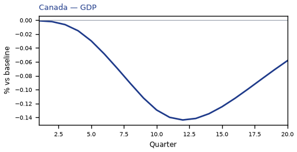
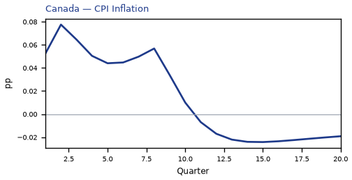
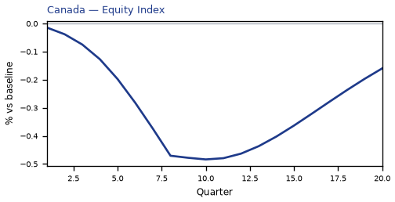
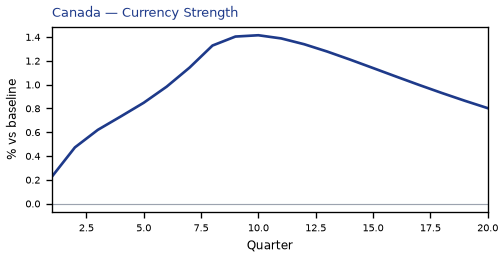
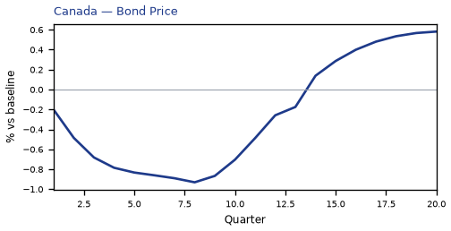
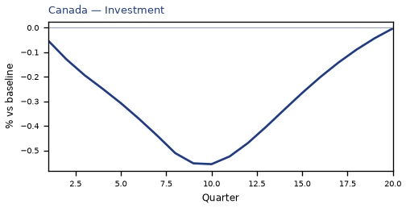
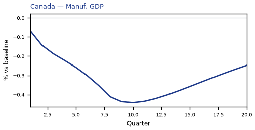
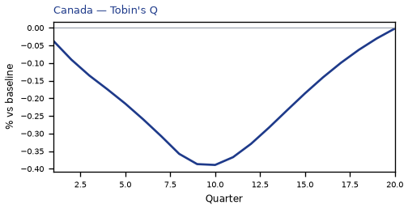
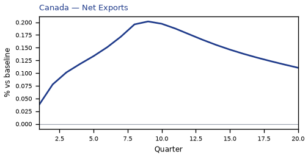
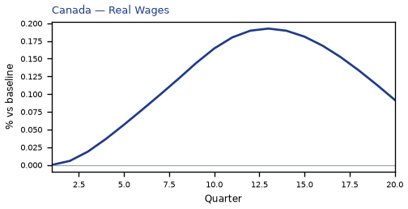

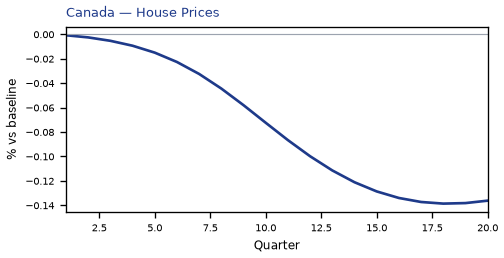
source=live · global_macro_v5 · contract v6 · Q1–Q20 JSON · not financial advice